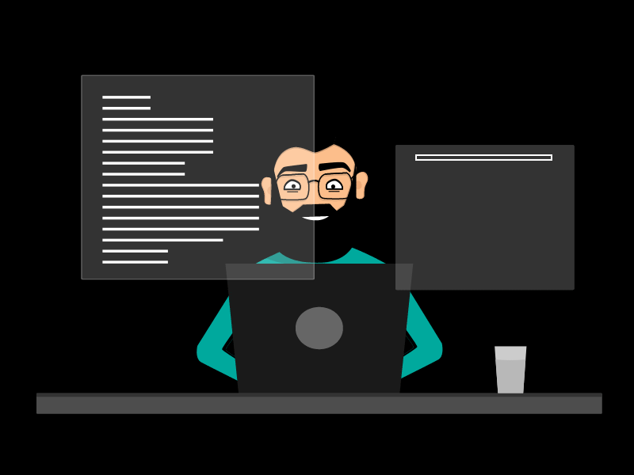

בעברי הובלתי את קורס התכנות של ממר"ם מספר שנים והכשרתי מאז אלפי
מתכנתים.
הרבה אנשים שואלים אותי איך כדאי להכנס לעולם הפיתוח וההייטק, ואני עונה שהכי כדאי ללמוד את המקצוע המבוקש
ביותר בתעשיה כיום - Full Stack Developer
נסביר תחילה מהו מתכנת פול-סטאק - זה מתכנת שמסוגל להרים אפליקציה מסחרית בשלמותה מקצה לקצה, כולל את צד
הפרונטאנד - זה מה שהיוזר רואה, הכפתורים שהוא יכול ללחוץ עליהם וכו' ואת צד הבקאנד שיושב על שרת מרכזי
ויודע לתת מענה ונתונים לכלל היוזרים המחוברים
צד הפרונטאנד כולל את ממשק המשתמש, העיצובים, האנימציות, הדפים השונים באפליקציה כולל המידע המוצג עליהם
והפונקציונאליות שלהם.
את הפרונטאנד מפתחים כיום בספריות Javascript כגון: react, angular, vue והוא רץ אח"כ על גבי שלל מכשירי קצה
- מחשבים, טלפונים, טלויזיות, שעונים, ועוד

צד הבקאנד כולל זיהוי והתחברות של יוזרים שונים, ממשקי הפעלה, מסד הנתונים - הדטבייס, הגנה מפני האקרים
ועוד, את הבקאנד ניתן לפתח בשפות שונות, בחירה נפוצה היא NodeJS פלטפורמת פיתוח המבוססת על שפת Javascript
בעולם המודרני, הבקאנד ישב בדרך כלל בענן, ויוזרים יוכלו לפנות אליו באמצעות חיבור לאינטרנט.
האינטרנט - היצירה הגדולה ביותר של האנושות, כל עיר חכמה, בית חכם, רכב חכם, טלפון שנדלק - מתחבר מיד
לאינטרנט. מהפכת האינטרנט עדיין בעיצומה - יותר ויותר אנשים מתחילים להשתמש ברשת באופן יומיומי
בני האדם פוגשים את האינטרנט, בראש ובראשונה דרך הדפדפן שלהם ושפת התכנות היחידה בדפדפן היא Javascript, כך
הפכה ג'אוסקריפט לשפת התכנות הפופולרית בעולם שכן היא השפה היחידה המאפשרת פיתוח של אפליקציה שלמה מקצה לקצה
שרצה על כל DEVICE
לכן מפתחים היום בJS את כל סוגי האפליקציות: אפליקציות מובייל מתקדמות, אפליקציות דסקטופ המותקנות על גבי
מחשבים מסוגים שונים, גם בבקאנד ג'אווסקריפט היא בחירה נפוצה
אם בעבר מתכנת היה מתלבט - באיזו שפת תכנות עלי להתמקד? היום זה ברור מאי פעם, שפת התכנות הזו היא
Javascript ולמרבה הפלא - זו גם השפה הקלה ביותר ללימוד, במיטב החברות כיום, תואר אקדמי איננו דרישת סף -
ניתן ללמוד את המקצוע באופן יסודי במשך מספר חודשים ולהתחיל לעבוד כמתכנת!
בקודינג אקדמי, בית הספר לתכנות אותו אני מוביל אנו מציעים קורס מתוקתק, תמציתי ומדויק, מעמיק וממוקד שבו
נכתוב ביחד קוד כל יום ונקבל חוות דעת שתאפשר לנו להשתפר מהר,
בקורס נבנה פרויקטים מהעולם האמיתי, שישמשו אותנו גם כתיק עבודות מרשים.
מאמרים נוספים
האם תואר במדעי המחשב נדרש כדי להשתלב כמתכנתים בהייטק
בעבר, תואר במדעי המחשב היה תנאי די הכרחי על מנת להשתלב כמתכנת (למעט יוצאי ממר"ם שנחטפו לעבודה כך
או
כך) אך המציאות השתנתה וכיום במיטב החברות, התואר הפך להיות מרכיב זניח ביחס לאלמנטים אחרים כגון...
למאמר המלא
יש ChatGPT - עדיין כדאי ללמוד תכנות ב-2023?
למידת מכונה (Machine Learning - לעיתים מכונה גם למידה חישובית) היא תחום במדעי המחשב העוסק בפיתוח
אלגוריתמים המיועדים לאפשר למחשב ללמוד מתוך דוגמאות, ולבצע משימות חישוביות בהן התכנות הקלאסי אינו
אפשרי...
למאמר המלא
שובו של הלקוח העשיר
עולם הפיתוח עובר בשנים האחרונות שינויים רדיקליים, ומפתחים מכל הצבעים והמינים מחפשים את דרכם
לטכנולוגיות האינטרנט המודרניות. צד הלקוח (Frontend) חוזר להיות Rich Client עם הרבה לוגיקה וניהול
State. שינויים קורים מהר בתקופתנו...
למאמר המלא